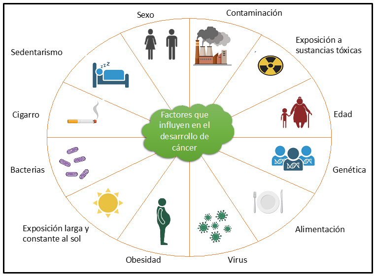

La leucemia es una enfermedad que puede tener diversos factores de riesgo que contribuyen a su desarrollo. Uno de los más estudiados es la exposición a radiación en altas dosis, como la que ocurre en accidentes nucleares o en ciertos tratamientos médicos. Esta radiación puede dañar el ADN de las células sanguíneas y provocar mutaciones que favorecen la aparición de leucemia. Aunque no todas las personas expuestas desarrollan la enfermedad, se reconoce que este factor incrementa significativamente la probabilidad.
Otro factor importante es la exposición a sustancias químicas, especialmente al benceno, que se encuentra en la industria del petróleo, la gasolina y algunos solventes. El contacto prolongado con este compuesto se ha asociado con un mayor riesgo de leucemia mieloide aguda. De manera similar, el humo del tabaco contiene agentes cancerígenos que circulan por la sangre y aumentan la probabilidad de desarrollar leucemia. Estos elementos químicos actúan directamente sobre la médula ósea, alterando la producción normal de células sanguíneas.
Los tratamientos médicos previos también pueden ser un factor de riesgo. Personas que han recibido quimioterapia o radioterapia para otros tipos de cáncer pueden presentar alteraciones en las células de la médula ósea que, con el tiempo, predisponen al desarrollo de leucemia. Este fenómeno se conoce como leucemia secundaria y refleja cómo algunos tratamientos, aunque necesarios, pueden tener efectos adversos a largo plazo.
Existen además síndromes genéticos que incrementan el riesgo de leucemia. Entre ellos se encuentran el síndrome de Down, la anemia de Fanconi, la ataxia telangiectasia y el síndrome de Bloom. Estas condiciones hereditarias afectan la reparación del ADN y hacen que las células sean más vulnerables a mutaciones que pueden desencadenar leucemia. Asimismo, los síndromes mielodisplásicos, que son enfermedades de la médula ósea, pueden evolucionar hacia leucemia en un porcentaje considerable de casos.
Finalmente, los antecedentes familiares y la edad también influyen. Tener un pariente cercano con leucemia linfocítica crónica aumenta el riesgo de padecerla, y en general, la leucemia mieloide aguda es más frecuente en personas mayores y en hombres. Sin embargo, es importante destacar que muchas personas diagnosticadas no presentan factores de riesgo identificables, lo que demuestra que la leucemia puede desarrollarse incluso en ausencia de antecedentes claros.
